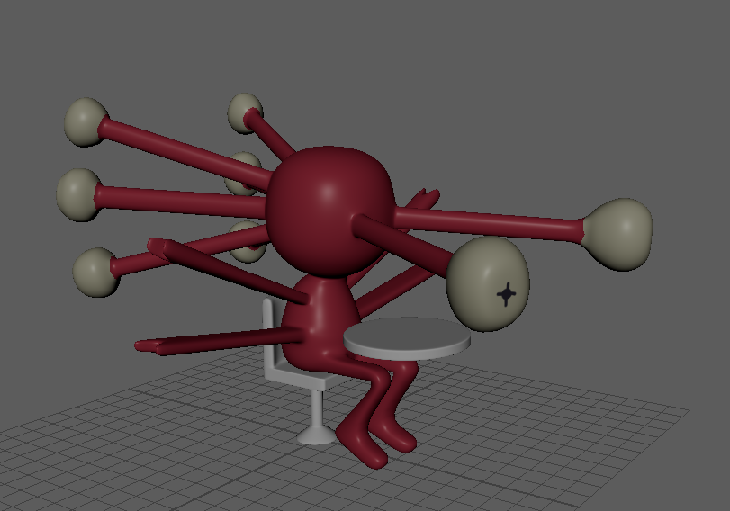
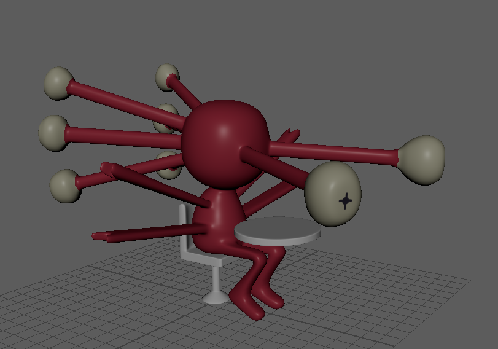

Coffee Space
Coffee Space is a dynamic and detailed environment built using Unity, with all of the assets being custom made and animated in Maya. It was created for school in a team of five, over the course of 2 months.
SFU IAT 343 - Computer Animation, Fall 2022. Professor Steve DiPaola.
Stephen Kerschbaumer: Modelling, Animation, Character Design
Bill Violette: Modelling, Animation, Spatial Design
Tatum Fry: Modelling, Animation, Character Design
Gabriel Kwong Kai Qian: Programming, Spatial Design
Kevin Hung: Programming
A selection of characters which I was responsible for modelling and animating.
The project was created for the purposes of exploring spatial design and creating a cohesive interactive space. We imagined this scene as part of a larger role-playing game; a cafe where the player might go to find a side-quest or talk-up the locals. A major challenge as a result of this was maintaining a consistent art style. None of us had experience in art direction, so it was a collaborative process in which we explored our various options within the skillset of our team. We were determined to create all our own assets, and as a result, we needed to make sure everyone was on the same page, visually. We settled on a cartoonish art style that our artists could reliably replicate. We took advantage of Unity's shader system to implement cell-shading, which really accentuated our desired look.
 

Another character I was responsible for modelling and animating. The characters we settled on including were first storyboarded, so we could understand their primary interaction. Then, they were modelled, textured, rigged, and animated in Maya.
Finally, they were brought into Unity, where we applied our stylized shaders and triggered the various animations.
Reflection
Ultimately, I would consider this project a success, none of our teammates had worked in Unity or Maya beforehand, so there was a large learning curve. Despite this, we achieved the goal we set-out to achieve, an immersive and stylistically cohesive interactive environment. Were there more time, there are a handful of technical issues to do with the Maya-to-Unity pipeline that I would want to resolve.